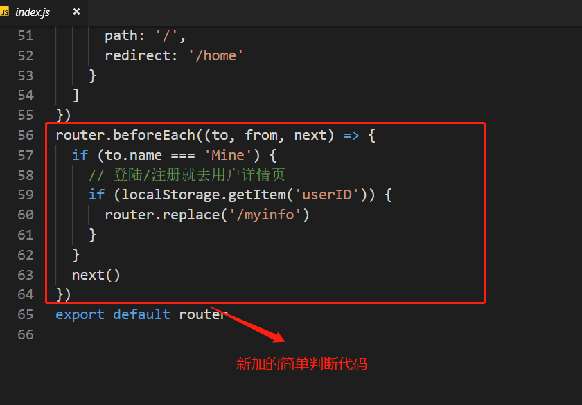

好久没写一些东西了，总是感觉有啥缺少的。~~~~恰好碰到最近在写一个移动端项目，遇到了如何使同一个链接在不同条件下跳转到不同路由组件问题，譬如大家经常看到手机中没登录跳转登录页，登陆后跳转个人信息页等。废话不多说了，直接上图：
这是没登录状态，点击下面mine按钮跳转至登录页
这个是我登录了自己的账号后，再次点击mine按钮会跳转至个人信息页面
好了，看到了这个效果今天咱们来实现下
先看官方文档：https://router.vuejs.org/zh-cn/advanced/navigation-guards.html
vue-router 提供的导航守卫主要用来通过跳转或取消的方式守卫导航。有多种机会植入路由导航过程中：全局的, 单个路由独享的, 或者组件级的。
官方文档中说了很清楚，我们可以使用 router.beforeEach 注册一个全局前置守卫：
在router文件夹下index.js中添加以下代码
router.beforeEach((to, from, next) => {
// ...
})

这里对router.beforeEach方法的每个参数做简要的解释。
“to”: 即将要进入的目标 路由对象;（这个对象中包含name，params，meta等属性）
"from": 当前导航正要离开的路由对象；（这个对象中包含name，params，meta等属性）
“next”: Function: 确保要调用 next 方法，否则钩子就不会被 resolved。这个当中还可以传一些参数，具体可以看官方文档。
if (to.name === 'Mine') ,也就是说当我们要跳转的路由对象是Mine时候，才会进入导航守卫中判断条件，当我们点击其他链接跳转其他页正常，因为我们只有mine按钮链接对应的情况有两种。 // 登陆/注册就去用户详情页
if (localStorage.getItem('userID')) {
router.replace('/myinfo')
}这段代码就是判断当用户点击了mine，我们需要判断用户是否是登录还是未登录了。因为之前用户登录的时候我将用户的userID保存到了localStorage中，所以只需要判断localStorage中是否有用户的userID，来判断用户是否登录。这里情况两个，未登录去登录页，登录去个人信息页
好了，通过简单的配置使用，我们就可以愉快的根据不同的情况来实现路由跳转不同组件了~哈哈，很简单吧，欢迎大家一起交流学习前端知识。我在GitHub上等你一起呦~
文章因为是在工作之余写的，可能时间匆忙，有些错别字或者语法等低级错误，欢迎留言指出，谢谢。。
同时在GitHub上也可以一起交流交流~~~
GitHub 走你